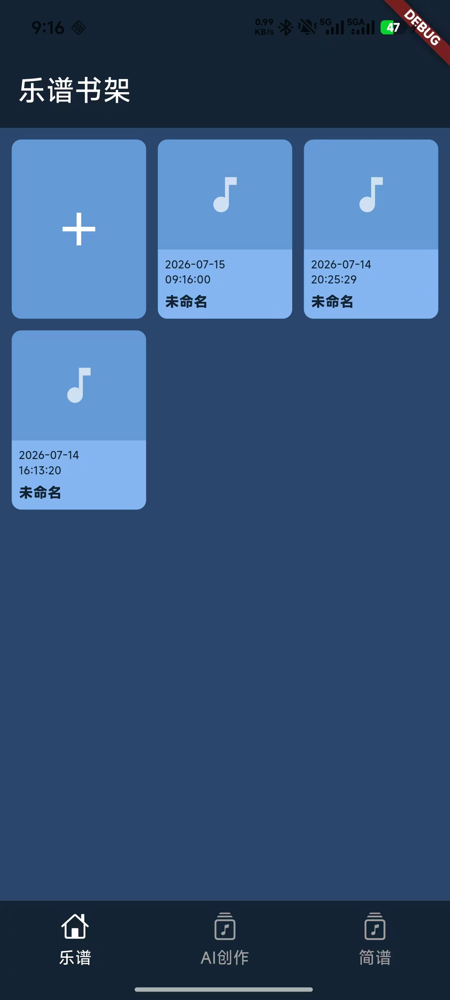
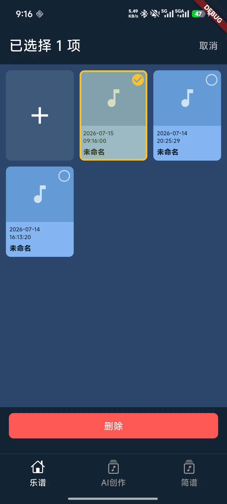
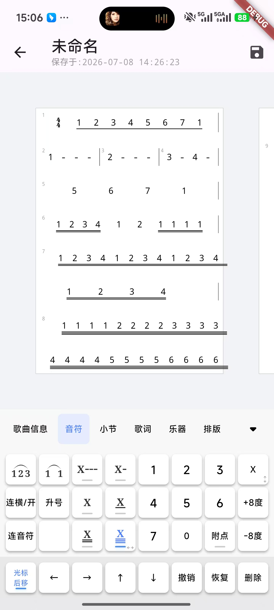

传统乐谱编辑工具门槛高、操作复杂，AI 时代值得一个更智能的解决方案
Sibelius、Finale 等专业乐谱软件学习曲线陡峭，界面复杂，普通音乐爱好者难以快速上手，很多创作灵感因此流失。
市面上以五线谱为主流，中国用户习惯使用的简谱编辑工具选择极少，功能简陋，无法满足专业创作需求。
现有乐谱编辑器几乎完全没有 AI 能力。AI 作曲、智能纠错、自动排版等前沿能力尚未被引入乐谱创作领域。
基于 Flutter 开发的移动端乐谱编辑应用，已完整支持简谱编辑与乐谱管理

统一管理所有乐谱作品，支持新建、编辑、删除，底部导航已预留 AI 创作入口

支持多选批量操作，高效管理乐谱库，交互体验流畅自然

完整的简谱编辑能力：音符输入、连音线、升降号、附点、八度、小节、歌词、乐器切换、排版调整
当前已实现简谱编辑，未来将持续拓展多类型乐谱与 AI 能力
支持数字音符、连音线、升降号、附点、八度标记、小节划分、歌词录入等完整简谱编辑功能
乐谱的创建、保存、重命名、批量选择与删除，清晰的时间轴展示
五线谱、吉他谱（六线谱）、鼓谱、和弦谱等多种乐谱格式的编辑与渲染
乐谱实时 MIDI 播放预览，支持导出为标准 MIDI 文件，连接外部音源
基于 AI 的音乐生成引擎，输入风格/情绪即可生成完整乐谱，支持续写、变奏、和声编排
AI 自动检测乐谱中的音符错误、节奏问题，一键智能优化排版，让乐谱更专业美观
传统编辑器只是「工具」，我们要做的是「AI 创作伙伴」
选择风格（流行/古典/民谣）、设定情绪、输入关键词，AI 自动生成完整简谱，降低创作门槛到零。
已有旋律片段？AI 帮你续写后续小节、生成变奏版本、自动编排和声，让灵感不再中断。
实时检测音符超音域、节奏不匹配、和弦冲突等问题，像语法检查一样检查乐谱。
自动优化乐谱页面布局、行距、音符间距，让非专业用户也能输出出版级乐谱效果。
想记录原创旋律却不会用专业软件？乐谱通让零基础用户也能像写文档一样写乐谱，AI 辅助更是大幅降低创作门槛。
教学中需要制作简谱教材、练习题？简谱原生支持 + 智能排版，让教案制作效率提升数倍。
从灵感记录到完整编曲，AI 辅助作曲 + 多格式导出 + MIDI 播放，覆盖创作全流程。
从简谱编辑器到全能 AI 音乐创作平台的成长路径
完成简谱核心编辑功能、乐谱书架管理、基础 UI 框架搭建
扩展五线谱、吉他六线谱、鼓谱等更多乐谱类型的编辑与渲染
集成 MIDI 播放引擎、导出功能，支持连接外部音源设备
接入 AI 作曲、续写、纠错、智能排版等核心智能能力
乐谱分享社区、在线协作编辑、模板市场、云端同步